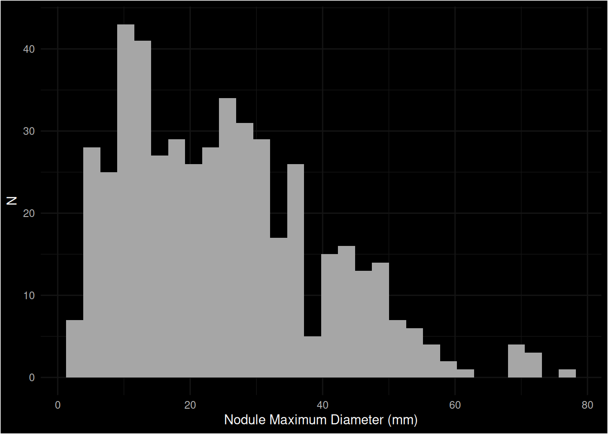

| Variable | Mean | SD | Lower IQR | Median | Upper IQR | Min | Max |
|---|---|---|---|---|---|---|---|
| age | 54.372 | 16.652 | 41 | 54.0 | 68.000 | 12.0 | 91 |
| bmi | 27.772 | 5.708 | 24 | 27.1 | 30.975 | 17.1 | 50 |
Data Description
Details of the data set.
Source
The data is derived from specialist Thyroid cancer units where patients presenting with symptoms (e.g. nodules) are assessed in greater detail and decisions are made as to whether imaging or further biopsies are required.
Data
An ASCII CSV file (Thy3000_DATA_LABELS_Raw.csv) with data on 584 cases has been provided. There is no data dictionary defining what each field is nor its type available yet.
NB Some of the column headers have commas (,) in the variable names, this can cause problems when reading CSV files. Such strings should be double-quoted which appears to be the case but something to check carefully.
| Variable (as received) | Type | Description | Renamed to… |
|---|---|---|---|
Record ID |
str |
Unique identifier. | record_id |
Data Access Group |
str |
Center | center |
Study ID |
str |
Study Identifiers. | study_id |
1.1 Date of referral |
date |
Date of referral | referral_date |
1.2 Which clinic was the patient recruited from? |
str |
Recruting clinic. | recruiting_clinic |
If Other |
str |
Other referring clinic. | |
1.3. The date the patient was seen in clinic |
date |
Date patient was seen in clinic. | clinc_date |
1.4 Referral source |
str |
Source of referral | referral_source |
"If Other please specify |
str |
Other referring source | |
"1.4.1 If GP was it 2-week wait referral?" |
|||
1.5. Presentation |
|||
Complete? |
|||
2.1. Age of the patient when seen in clinic |
|||
2.2. Body Mass Index of patient |
|||
2.3. Smoking status |
|||
2.4. Previous neck irradiation |
|||
2.5 American Society of Anaesthesiologist (ASA) score |
|||
Complete? |
|||
3.1. Presentation (choice=Neck symptoms) |
|||
3.1. Presentation (choice=Incidental lesion on imaging) |
|||
3.1. Presentation (choice=HypErthyroidism on thyroid function test) |
|||
3.1. Presentation (choice=HypOthyroidism on thyroid function test) |
|||
3.1. Presentation (choice=Symptoms of abnormal thyroid function) |
|||
3.1. Presentation (choice=Not known) |
|||
3.1. Presentation (choice=Other) |
|||
If other please specify" |
|||
3.1.1 Symptomatology (choice=No symptoms) |
|||
"3.1.1 Symptomatology (choice=Neck lump (noted by patient family or doctor))" |
|||
3.1.1 Symptomatology (choice=Compressive symptoms (breathing or swallowing difficulty or voice change)) |
|||
3.1.1 Symptomatology (choice=Symptoms of thyroid dysfunction) |
|||
3.1.1 Symptomatology (choice=Other) |
|||
"If other please specify" |
|||
3.1.2 Was this nodule found incidentally on imaging? |
|||
"If yes what imaging" |
|||
3.2 Clinical Assessment |
|||
3.2.1 Retrosternal on clinical examination |
|||
3.2.2 Palpable lymphadenopathy |
|||
3.2.3 Patient perception of rapid growth of nodule |
|||
3.4 Thyroid function tests done within 3 months of presentation to clinic |
|||
3.5 Ultrasound performed |
|||
3.5.1 Reported maximum diameter of the largest thyroid nodule on ultrasound in millimetres |
|||
3.5.2 Description of thyroid nodule(s) on ultrasound |
|||
"3.5.3 If Ultrasound performed |
|||
U stage reported: " |
|||
"3.5.4 If Ultrasound performed |
|||
TIRADS reported " |
|||
"3.5.5 If Ultrasound performed |
|||
was lymphadenopathy documented" |
|||
3.5.6 Elastography performed |
|||
3.5.7 CT neck performed |
|||
3.5.8 If CT neck performed reason for performing it (choice=Extrathyroid extention/local invasion) |
|||
3.5.8 If CT neck performed reason for performing it (choice=Retrosternal extension/plan surgical approach) |
|||
3.5.8 If CT neck performed reason for performing it (choice=Extent of lymphadenopathy) |
|||
3.5.8 If CT neck performed reason for performing it (choice=Tracheal compression) |
|||
3.5.8 If CT neck performed reason for performing it (choice=Not known) |
|||
3.5.8 If CT neck performed reason for performing it (choice=Unrelated to thyroid pathology) |
|||
3.5.9 MRI neck performed |
|||
3.5.10 If MRI neck performed reason for performing it (choice=Extrathyroid extention/local invasion) |
|||
3.5.10 If MRI neck performed reason for performing it (choice=Retrosternal extension/plan surgical approach) |
|||
3.5.10 If MRI neck performed reason for performing it (choice=Extent of lymphadenopathy) |
|||
3.5.10 If MRI neck performed reason for performing it (choice=Tracheal compression) |
|||
3.5.10 If MRI neck performed reason for performing it (choice=Not known) |
|||
3.5.10 If MRI neck performed reason for performing it (choice=Unrelated to thyroid pathology) |
|||
3.5.11 Iodine-123 scan performed |
|||
3.6. FNA of thyroid nodule performed (either at time of ultrasound or later) |
|||
3.6.1 If FNA performed was Thy or Bethesda stage reported" |
|||
3.6.1.1 Thy result |
|||
3.6.1.2 Bethesda result |
|||
3.7 Core biopsy performed |
|||
3.8 FNA of lymph node performed |
|||
3.8.1 If FNA lymph node performed result |
|||
Complete? |
|||
4.1 Initial management decision |
|||
4.2 Date of decision (either clinic letter or MDT date) |
|||
4.3 Date of surgery or start of other treatment (if interventional) |
|||
4.4. In case of no intervention was a routine review offered |
|||
4.4.1 If yes what was the planned interval (in weeks) |
|||
4.4.2 Was Ultrasound repeated at routine review? |
|||
4.4.3 Was FNA repeated at routine review |
|||
4.4.4 If routine review performed was management strategy changed at review |
|||
4.4.4.1 If management strategy changed at review revised management decision |
|||
"4.4.4.2 If yes reason for change in management" |
|||
If other |
|||
4.4.4.3 If no change in management decision: date last seen by 'thyroid' team |
|||
"4.4.4.4 If no change in management strategy at review |
|||
confirm management plan when last seen" |
|||
4.4.5 Patient was signposted to appropriate patient SUPPORT organisation and/or provided with written PATIENT information about thyroid nodules (including leaflets) |
|||
Complete? |
|||
5.1 Type of thyroid surgery |
|||
5.1.1 Lymph node dissection done at this surgery |
|||
5.1.2 Pathology |
|||
"If other cancer/other diagnosis please state" |
|||
Complete? |
Tabular and graphical summaries of the data provided in Thy3000_DATA_LABELS_Raw.csv after cleaning we can summarise the data. In total there were 549 recorded from a total of 15.
Quantitative Variables
Statistics
Age
Body Mass Index (BMI)
Nodule Maximum Diameter

Categorical Variables
ASA Score
| asa_score | n | % |
|---|---|---|
| I | 189 | 32.363 |
| II | 204 | 34.932 |
| III | 72 | 12.329 |
| IV | 3 | 0.514 |
| NA | 116 | 19.863 |
Data Access Group
| data_access_group | n | % |
|---|---|---|
| Barnsley | 35 | 5.993 |
| Cardiff and Vale | 44 | 7.534 |
| Doncaster | 19 | 3.253 |
| Hull | 31 | 5.308 |
| NHS Dumfries and Galloway | 4 | 0.685 |
| NHS Tayside | 30 | 5.137 |
| Norfolk & Norwich | 30 | 5.137 |
| Portsmouth | 32 | 5.479 |
| Royal Berkshire | 106 | 18.151 |
| Salford | 40 | 6.849 |
| Sheffield Teaching Hospitals Foundation Trust | 116 | 19.863 |
| University Hospitals of North Midlands | 56 | 9.589 |
| Wirral | 4 | 0.685 |
| Wye Valley Trust | 33 | 5.651 |
| NA | 4 | 0.685 |
Referral Source
| label: referral-source-bar
| fig-cap: “Referral Source”
| eval: true
| echo: false
| output: true
df |> ggplot(aes(referral_source, fill = referral_source)) + geom_bar() + labs(x = “referral_source”, y = “N”) + scale_fill_discrete(guide = “none”) + scale_x_discrete(labels = function(x) stringr::str_wrap(x, width = 15))
```
| referral_source | n | % |
|---|---|---|
| A&E | 3 | 0.514 |
| Acute Medicine | 3 | 0.514 |
| Cardiology | 3 | 0.514 |
| Endocrinology | 26 | 4.452 |
| GP | 429 | 73.459 |
| Gastroenterology | 7 | 1.199 |
| Gynaecology | 2 | 0.342 |
| Heamatology | 4 | 0.685 |
| Inpatient | 2 | 0.342 |
| Oncology | 4 | 0.685 |
| Oral & Maxillofacial | 6 | 1.027 |
| Other | 67 | 11.473 |
| Respiratory | 13 | 2.226 |
| Rheumatology | 7 | 1.199 |
| Urology | 4 | 0.685 |
| NA | 4 | 0.685 |
Recruiting Clinic
| clinic_recruiting | n | % |
|---|---|---|
| ENT | 280 | 47.945 |
| GP | 25 | 4.281 |
| General surgery (including endocrine surgery) | 131 | 22.432 |
| Joint thyroid | 75 | 12.842 |
| Medicine | 59 | 10.103 |
| Other | 11 | 1.884 |
| NA | 3 | 0.514 |
Thyroid Nodule FNA
| nodule_fna_thy | n | % |
|---|---|---|
| Thy1 | 69 | 11.815 |
| Thy2 | 114 | 19.521 |
| Thy3 | 95 | 16.267 |
| Thy4 | 15 | 2.568 |
| Thy5 | 14 | 2.397 |
| NA | 277 | 47.432 |
Final Pathology
| final_pathology | n | % |
|---|---|---|
| Benign | 88 | 15.068 |
| Malignant | 71 | 12.158 |
| NA | 425 | 72.774 |
Final Pathology x Thyroid Nodule FNA
It is useful to check that the rules we have derived for classifying Final Pathology, which are based on thyroid_surgery_lymph_node_pathology when available and nodule_fna_thy when not are correct. We can do this by tabulating the data (a heatmap could be plotted that graphically shows the data distribution using the geom_tile() geometry).
| Thyroid Surgery Lymph Node Pathology | Thy1 (%) | Thy2 (%) | Thy3 (%) | Thy4 (%) | Thy5 (%) | Missing (%) |
|---|---|---|---|---|---|---|
| Anaplastic cancer | NA | NA | NA | NA | 1 (100.000) | NA |
| Auto immune thyroiditis | 1 (25.000) | NA | 1 (25.000) | NA | NA | 2 (50.000) |
| Colloid adenoma | 1 (16.667) | 1 (16.667) | 2 (33.333) | 1 (16.667) | NA | 1 (16.667) |
| Colloid goitre | 7 (19.444) | 7 (19.444) | 7 (19.444) | NA | NA | 15 (41.667) |
| Follicular adenoma | 3 (13.043) | 1 ( 4.348) | 18 (78.261) | 1 ( 4.348) | NA | NA |
| Follicular thyroid cancer | 1 ( 7.692) | 1 ( 7.692) | 10 (76.923) | NA | NA | 1 ( 7.692) |
| Graves’ disease | 1 (50.000) | NA | NA | NA | NA | 1 (50.000) |
| Hürthle cell/oncocytic adenoma | 1 ( 9.091) | 2 (18.182) | 7 (63.636) | 1 ( 9.091) | NA | NA |
| Hürthle cell/oncocytic carcinoma | 1 (20.000) | NA | 3 (60.000) | NA | 1 (20.000) | NA |
| Medullary thyroid cancer | NA | NA | NA | 1 (50.000) | NA | 1 (50.000) |
| Other cancer / Other diagnosis | 2 ( 6.452) | 11 (35.484) | 9 (29.032) | NA | NA | 9 (29.032) |
| Papillary thyroid cancer | 5 (10.000) | 4 ( 8.000) | 15 (30.000) | 9 (18.000) | 12 (24.000) | 5 (10.000) |
| Simple cyst | 2 (33.333) | NA | NA | NA | NA | 4 (66.667) |
| NA | 44 (11.168) | 87 (22.081) | 23 ( 5.838) | 2 ( 0.508) | NA | 238 (60.406) |
We may be interested in the percentages across all observations though.
| Thyroid Surgery Lymph Node Pathology | Thy1 (%) | Thy2 (%) | Thy3 (%) | Thy4 (%) | Thy5 (%) | Missing (%) |
|---|---|---|---|---|---|---|
| Anaplastic cancer | NA | NA | NA | NA | 1 ( 0.171) | NA |
| Auto immune thyroiditis | 1 ( 0.171) | NA | 1 ( 0.171) | NA | NA | 2 ( 0.342) |
| Colloid adenoma | 1 ( 0.171) | 1 ( 0.171) | 2 ( 0.342) | 1 ( 0.171) | NA | 1 ( 0.171) |
| Colloid goitre | 7 ( 1.199) | 7 ( 1.199) | 7 ( 1.199) | NA | NA | 15 ( 2.568) |
| Follicular adenoma | 3 ( 0.514) | 1 ( 0.171) | 18 ( 3.082) | 1 ( 0.171) | NA | NA |
| Follicular thyroid cancer | 1 ( 0.171) | 1 ( 0.171) | 10 ( 1.712) | NA | NA | 1 ( 0.171) |
| Graves’ disease | 1 ( 0.171) | NA | NA | NA | NA | 1 ( 0.171) |
| Hürthle cell/oncocytic adenoma | 1 ( 0.171) | 2 ( 0.342) | 7 ( 1.199) | 1 ( 0.171) | NA | NA |
| Hürthle cell/oncocytic carcinoma | 1 ( 0.171) | NA | 3 ( 0.514) | NA | 1 ( 0.171) | NA |
| Medullary thyroid cancer | NA | NA | NA | 1 ( 0.171) | NA | 1 ( 0.171) |
| Other cancer / Other diagnosis | 2 ( 0.342) | 11 ( 1.884) | 9 ( 1.541) | NA | NA | 9 ( 1.541) |
| Papillary thyroid cancer | 5 ( 0.856) | 4 ( 0.685) | 15 ( 2.568) | 9 ( 1.541) | 12 ( 2.055) | 5 ( 0.856) |
| Simple cyst | 2 ( 0.342) | NA | NA | NA | NA | 4 ( 0.685) |
| NA | 44 ( 7.534) | 87 (14.897) | 23 ( 3.938) | 2 ( 0.342) | NA | 238 (40.753) |